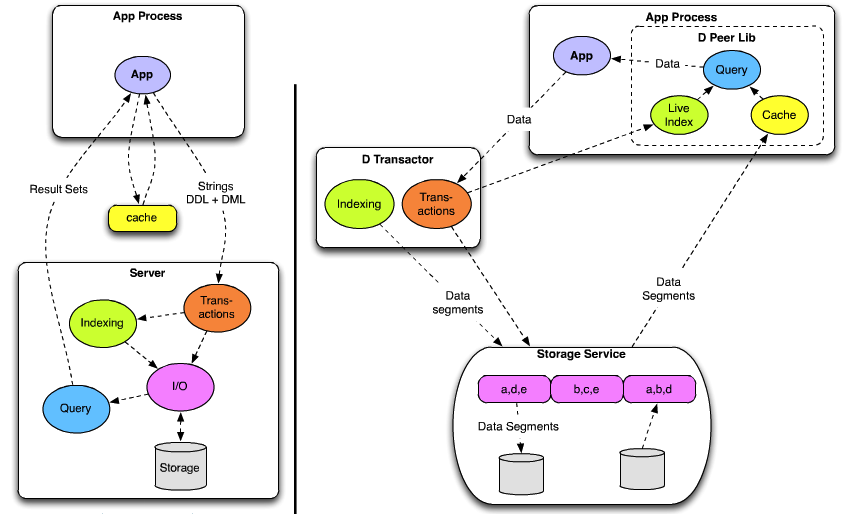
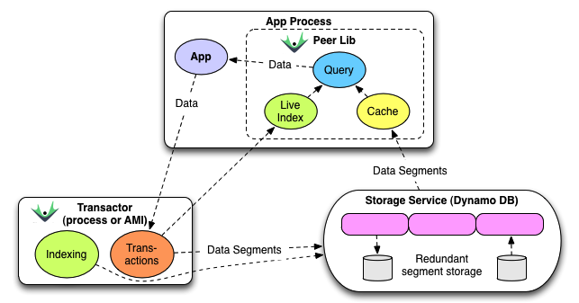
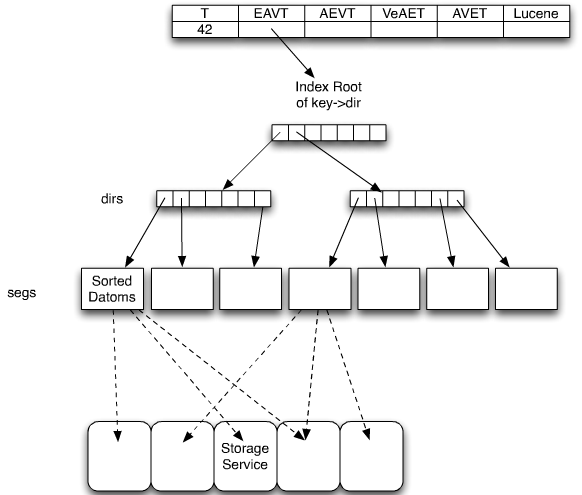
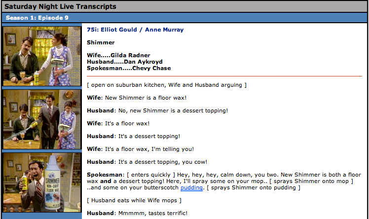
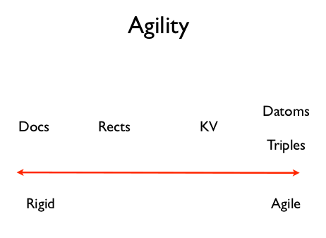
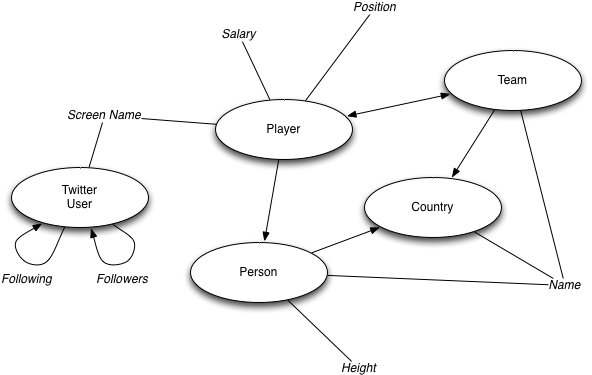

NoSQL Techsessie Datomic
Presenter Notes
Topics
- Introduction
- Deconstructing the Database
- Datomic Architecture
- NoSQL, NewSQL and Datomic
- Datalog Crash Course
- Lab Exercises
Presenter Notes


Presenter Notes
Rich Hickey
Presenter Notes
Complexity
Rich Hickey, at Strangeloop 2012
Complected, braided together
Presenter Notes
Deconstructing the Database
Presenter Notes
Deconstruction
- Information Model
- State Model
- Coordination Model
- Distribution Model
Presenter Notes
Deconstructing the Information Model
- Traditional: relations vs. objects, impedance mismatch

- Datomic: facts, EAVT, Datoms
Presenter Notes
Deconstructing the State Model
- Traditional: update in place, contention, "the basis problem"
- Datomic: Accretion of immutable facts, the database as an expanding value
quite reasonable in a time where storage is expensive, but that is not the case anymore. Over there, a place.
Presenter Notes
Deconstructing the Coordination Model
- Traditional: heavy coordination for reads and writes, need to poll for novelty

- Datomic: splits "perception" (reads) and "process" (writes), reactive - not polling
Presenter Notes
Deconstructing the Distribution Model
- Traditional: Client-server, partitions between service providers and service requesters

- Datomic: Peers and Storage, and Transactors too, empower applications by coordinating change and storage
Presenter Notes
Deconstructing the Database

Source: Rich Hickey, at GOTO 2012
Basis problem with client-server, "over there"
Presenter Notes
Datomic Architecture
Presenter Notes
Datomic Architecture

Presenter Notes
Storage Services
Presenter Notes
Indexing
- EAVT ~ Relational
- AEVT ~ Column
- VEAT ~ Reverse Indexing
- AVET ~ Range Queries
Presenter Notes
Indexing

Presenter Notes
NoSQL, NewSQL and Datomic
Presenter Notes
Datomic vs. No/New/SQL
Presenter Notes
Datomic vs. No/New/SQL
- Documents
- Graphs
- Columns
- Key-Value Pairs
- Rectangles
Presenter Notes
Shimmer (SNL)

http://snltranscripts.jt.org/75/75ishimmer.phtml
Presenter Notes
Datomic vs. Document Stores
- Datoms are not JSON Documents
- Documents are comparable to entities with attributes and values
- Not the unit of storage
Presenter Notes
Datomic vs. Graph Databases
- Neo4j has reified edges
- Datomic has reified transactions
- Example: Back To The Future with Datomic
- blueprints-datomic-graph implements Blueprints API
Presenter Notes
Datomic vs. Column-Family Stores
- Datomic AEVT indexing ~ a column store
- Sparse, irregular data
- Single and multi-valued attributes
Presenter Notes
Datomic vs. Key-Value Stores
- Key-Value Stores have no leverage
- Datomic uses KV-stores for storage
- Adds leverage with query and transactions and consistency
Presenter Notes
Datoms vs. Rectangles
- Datomic: No rectangles = no structural rigidity
- NewSQL: transactional writes serialized using a single writer
- VoltDB: single-threaded model, no overhead of write contention
- VoltDB: focus on TP vs. analytics
VoltDB write throughput = 40-50x faster than traditional databases
Presenter Notes
Agility

Source: Stuart Halloway, from "Day of Datomic" training
Presenter Notes
Crash Course Datalog
Presenter Notes
Datalog in 6 minutes
Source: Stuart Halloway, at EuroClojure @ 24:30
See also this tutorial
Presenter Notes
Query Anatomy
Clojure
1 (q ('[:find ...
2 :in ...
3 :where ...]
4 input1
5 ...
6 inputN))
Java
1 q( "[:find ...
2 :in ...
3 :where ...]",
4 input1,
5 ...,
6 inputN);
:where - constraints, :in - inputs, :find - variables to return
Presenter Notes
Variables and Constants
Variables
- ?customer
- ?product
- ?orderId
Constants
- 42
- "john"
- :order/id
- #instant "2012-02-29"
Presenter Notes
Data Pattern: E-A-V
1 -------------------------------------------
2 | entity | attribute | value |
3 -------------------------------------------
4 | 42 | :email | jdoe@example.com |
5 | 43 | :email | jane@example.com |
6 | 42 | :orders | 107 |
7 | 42 | :orders | 141 |
8 -------------------------------------------
Constrain the results returned, binds variables
1 [?customer :email ?email]
-> jdoe@example.com, jane@example.com
1 [42 :email ?email]
-> jdoe@example.com
Presenter Notes
Data Pattern: E-A-V
1 -------------------------------------------
2 | entity | attribute | value |
3 -------------------------------------------
4 | 42 | :email | jdoe@example.com |
5 | 43 | :email | jane@example.com |
6 | 42 | :orders | 107 |
7 | 42 | :orders | 141 |
8 -------------------------------------------
What attributes does customer 42 have?
1 [42 ?attribute]
-> :email, :orders
What attributes and values does customer 42 have?
1 [42 ?attribute ?value]
-> :email - jdoe@example.com, :orders - 107, 141
Presenter Notes
Where Clause
Where to put the data pattern?
1 [:find ?customer
2 :where [?customer :email]]
Implicit Join
1 [:find ?customer
2 :where [?customer :email]
3 [?customer :orders]]
Presenter Notes
Input(s)
1 import static datomic.Peer.q;
2
3 q("[:find ?customer :in $ :where [?customer :id] [?customer :orders]]",
4 db);
Find using $database and ?email:
1 q("[:find ?customer" +
2 ":in $ ?email " +
3 ":where [?customer :email ?email]]",
4 db, "jdoe@example.com");
Presenter Notes
DB and non-DB resources
1 q("[:find ?a ?v :in $ :where [$ ?a ?v]]",
2 System.getProperties());
Presenter Notes
Predicates
Functional constraints that can appear in a :where clause
1 [(< 50.0 ?price)]
Find the expensive items
1 [:find ?item
2 :where [?item :item/price ?price]
3 [(< 50.0 ?price)]]
Presenter Notes
Functions
1 [(shipping ?zip ?weight) ?cost]
Call functions by binding inputs:
1 [:find ?customer ?product
2 :where [?customer :shipAddress ?address]
3 [?address :zip ?zip]
4 [?product :product/weight ?weight]
5 [?product :product/price ?price]
6 [(Shipping/estimate ?zip ?weight) ?shipCost]
7 [(<= ?price ?shipCost)]]
Or: find me the customer/product combinations where the shipping cost dominates the product cost.
Presenter Notes
Lab Exercises
Presenter Notes
Soccer Players

https://github.com/mamersfo/datomic-intro-java
Presenter Notes
Exercise 1
Find all entities
1 [:find ?p :in $ :where [?p :name]]
Presenter Notes
Exercise 2
Find all persons
1 [:find ?p :in $ :where [?p :person/height _]]
Presenter Notes
Exercise 3
Find team and salary for Zlatan Ibrahimovic
1 [:find ?instant :in $ ?n :where
2 [?p :name ?n] [?tx :db/txInstant ?instant]]
Presenter Notes
Exercise 4
List name, team and salary, ordered by salary (desc) for 2011
1 Peer.q( query, conn.db().asOf( year2011 ) );
Presenter Notes
Exercise 5
Find Twitter screenName and followersCount where followersCount > a million
1 [:find ?s ?c :in $ :where
2 [?t :twitter/screenName ?s]
3 [?t :twitter/followersCount ?c]
4 [(> ?c 1000000)]]
Presenter Notes
Exercise 6
Find names of players who are following Robin van Persie on Twitter
1 [:find ?name :in $ ?a1 :where
2 [?p1 :name ?a1]
3 [?p1 :player/twitter.screenName ?s1]
4 [?tw :twitter/screenName ?s1]
5 [?tw :twitter/followers ?fs]
6 [?fs :twitter/screenName ?s2]
7 [?p2 :player/twitter.screenName ?s2]
8 [?p2 :name ?name]]